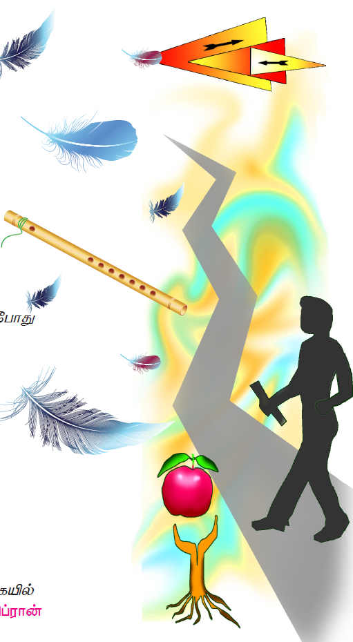
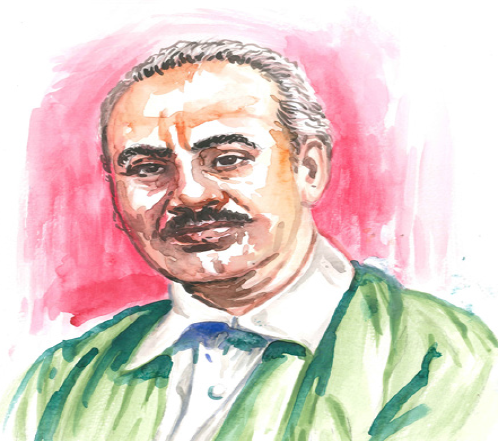

நுழையும்முன்
இலக்கியங்கள் மக்களின் வாழ்வை நெறிப்படுத்தி அறவழியில் செலுத்துகின்றன. மனித வாழ்வைச் செம்மைப்படுத்துகின்றன. கவிஞர்கள் வாழ்வின் பொருளை உணர்த்தும் உயர்ந்த சிந்தனைகளைக் கூறியுள்ளனர். அத்தகைய சிந்தனைகளைக் கூறும் கவிஞர்கள் உலகெங்கும் உள்ளனர். அயல்நாட்டுக் கவிஞர் ஒருவரின் சிந்தனைகளை அறிவோம் வாருங்கள்.

வாழ்க்கை பின்திரும்பிச் செல்லாது
நேற்றுடன் ஒத்துப் போகாது
கொடுப்பவரின் பரிசுடன்
அவருக்குச் சமமாக எழுங்கள்
சிறகுகளின் மீது எழுவது போல
உழைக்கும்போது நீங்கள்
புல்லாங்குழலாகி விடுகிறீர்கள்
அதன் இதயம் காலத்தின் கிசுகிசுப்பை
ஓர் இசையாக மாற்றி விடுகிறது
உங்களுக்குள் இருக்கும்
நன்மையைப்பற்றித்தான்
நான் பேசமுடியும்
தீமையைப் பற்றியல்ல
உங்கள்சுயத்துடன்
நீங்கள் ஒருமைப்பாடு கொண்டிருக்கும்போது
நீங்கள் நல்லவர்
என்னைப்போல் இரு
பழுத்து உன் உள்ளீடுகளை எல்லாம்
முழுசாய்க்கொடு என்று
பழம் வேரைப் பார்த்து
நிச்சயமாகச் சொல்லாது
கொடுப்பது பழத்தின் இயல்பு
பெறுவது வேரின் இயல்பு
உங்கள் பேச்சின் போது
நீங்கள் விழிப்புணர்ச்சியுடன்
இருப்பது நல்லது
உறுதியாகக் கால்பதித்து
உங்கள் குறிக்கோளை நோக்கி நடக்கையில்நீங்கள் நல்லவர் – கலீல்கிப்ரான் சொல்லும் பொருளும்
சுயம் – தனித்தன்மை
உள்ளீடுகள் – உள்ளே இருப்பவை
நூல் வெளி

கலீல் கிப்ரான் லெபனான் நாட்டைச் சேர்ந்தவர். கவிஞர். புதின ஆசிரியர், கட்டுரையாசிரியர், ஓவியர் எனப் பன்முக ஆற்றல் பெற்றவர்.
இப்பாடப்பகுதி கவிஞர் புவியரசு மொழிபெயர்த்த தீர்க்கதரிசி என்னும் நூலில் இடம்பெற்றுள்ளது.
1. உங்களது நிறை குறைகளைப் பட்டியலிடுக.
2. உங்கள் நண்பர் மனம் சோர்ந்து இருக்கும்போது அவரைத் தேற்றும் வழிகள் குறித்துக் கலந்துரையாடுக.
1 பரிசு பெறும்போது நம் மனநிலை டேஷ் ஆக இருக்கும்.
அ) கவலை
ஆ) துன்பம்
இ) மகிழ்ச்சி
ஈ) சோர்வு
2 வாழ்வில் உயர கடினமாக டேஷ் வேண்டும்
அ) பேச
ஆ) சிரிக்க
இ) நடக்க
ஈ) உழைக்க
1 பழம், வேர் ஆகியவற்றின் இயல்புகள் யாவை?
2 உழைக்கும் போது என்னவாக ஆகிறோம்?
1 நல்லவர் என்னும் பெயர் பெற நாம் என்ன செய்யலாம்?
2 உங்கள் குறிக்கோளை அடைய நீங்கள் செய்யும் முயற்சிகளை எழுதுக.